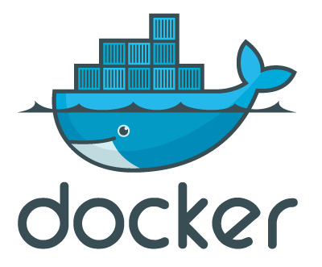

Nick Freeman
Full-Stack Developer
github
twitter
linkedin
email
Less words, more data
• Link
• Link
Menu
Nick Freeman
HowTo: Sample ruby application
October 10, 2017
Docker4Dev: Часть 3. Ежедневные советы
October 10, 2017
Docker4Dev: Часть 2. Правильная сборка образов
August 24, 2017

Docker4Dev: Часть 1. Основные концепции
August 23, 2017